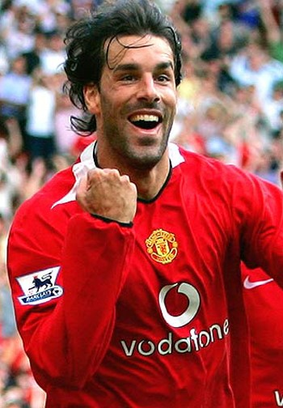

Chương 31

ir Alex Ferguson sẽ nghỉ hưu ở tuổi 60, tức năm 2002, việc đó ông thông báo từ lâu. Điều vẫn mơ hồ là Sir sẽ làm gì sau khi về hưu? Martin Edwards phản đối việc Sir ở lại Old Trafford, sợ rằng Manchester United dính phải “hội chứng Matt Busby” năm nào. Edwards có cái lý của mình, bởi các cầu thủ thế hệ vàng từ nhỏ đến lớn không biết người thầy nào khác ngoài Sir Alex; nếu Sir ở lại, nhiều khả năng họ vẫn chỉ nghe lời ông, chứ không thèm biết HLV kế nhiệm là ai. Khi lên thay Edwards, Peter Kenyon thuyết phục BLĐ United mời Sir Alex giữ vị trí đại sứ, chuyên đi đó đi đây quảng bá hình ảnh CLB, giống như vai trò của Sir Bobby Charlton. Tuy vậy, BLĐ chỉ chấp nhận trả cho đại sứ 100 000 bảng đồng niên. Sir Alex coi mức lương đó là sự “sỉ nhục”, vì cùng lúc ấy, hãng giày Nike đang mời ông ký hợp đồng quảng cáo bốn năm, mỗi năm trả một triệu. Do bất đồng về mặt tài chính, đến tận tháng năm, 2001, hợp đồng hậu hưu trí của Sir vẫn chưa được ký kết.
Người hâm mộ đương nhiên đứng về phía Sir Alex. Trong trận cuối cùng mùa giải 2000-2001 gặp Tottenham, họ hát vang câu “Chúng ta ai cũng yêu Alex Ferguson” suốt 40 phút liền. Hai hội CĐV lớn của Quỷ Đỏ, IMUSA và Shareholders United, mạnh mẽ lên án BLĐ về tội “vong ân bội nghĩa” đối với Sir. Trước sức ép bốn bề, BLĐ buộc phải soạn thảo hợp đồng mới, mời Sir làm đại sứ theo nhiệm kỳ năm năm, lương một triệu một năm, bằng với mức Nike đưa ra. Trong mùa cuối cùng ở vị trí HLV, 2001-2002, Sir sẽ nhận lương mới: 60 000 bảng một tuần, vượt trên tất cả các học trò (Cầu thủ United lãnh lương cao nhất là Roy Keane, với 52 000 bảng).
Tân giám đốc điều hành Peter Kenyon là người phóng khoáng, không ky bo như Martin Edwards. Dưới thời ông, United chi tiêu đúng kiểu đại gia. Không những giúp Sir Alex có được hợp đồng hậu hĩnh, Kenyon luôn sẵn sàng dốc túi mua về ngôi sao. Sau khi bình phục chấn thương, Ruud Van Nistelrooy đến Old Trafford với giá 19 triệu bảng. Ít lâu sau, United phá kỷ lục chuyển nhượng Anh Quốc, bỏ ra đến 28.1 triệu cho tiền vệ người Argentina Juan Sebastian Veron. Tự nhắm mình không cạnh tranh được với Nistelrooy, Andy Cole chuyển sang Blackburn Rovers, còn Teddy Sheringham trở về chốn cũ Tottenham[1]. Bạn đọc có thể ngạc nhiên khi thấy Sir Alex để một cầu thủ vừa giành cú đúp danh hiệu ra đi, nhưng Sir biết mình cần làm gì. Sheringham đã ở giai đoạn cuối sự nghiệp; phong độ chói sáng của anh mùa trước chẳng qua chỉ là “vũ khúc thiên nga” cuối cùng. Bên cạnh Sheringham và Cole, trợ lý McClaren cũng nói lời từ giã, sang nhận ghế HLV trưởng tại Middlesbrough. Thay vì tìm người thay thế, Sir Alex quyết định kiêm nhiệm.
Bước sang tháng tám, 2001, tưởng như United đã mua sắm xong xuôi, thì đùng một cái, xảy ra xì căng đan Jaap Stam. Báo Daily Mirror đăng những trích đoạn hồi ký của Stam, trong đó có một số chi tiết “vạch áo cho người xem lưng”. Chẳng hạn, Stam kể về việc Sir Alex đã tiếp cận trái phép để mua anh từ PSV Eindhoven, rồi chuyện Sir nổi giận trong giờ nghỉ, đá gãy cả bàn y tế, làm bắn tung bông băng, chai lọ, khiến cầu thủ sợ chết khiếp, ai ai cũng phải lấy tay che…chỗ kín, sợ miểng chai văng phải. Ngoài ra, Stam còn có ý kiến chỉ trích David Beckham và anh em Neville. Đối với Sir Alex, tiết lộ chuyện nội bộ ra trước bàn dân thiên hạ là đại tội, nên Stam chỉ còn một con đường là phải ra đi.
Thật ra, “đầu têu” vụ Jaap Stam là Piers Morgan, tổng biên tập tờ Daily Mirror. Giữ vai sếp tổng, song Morgan không có được sự khách quan cần thiết, mà dùng phương tiện truyền thông trong tay mình như một công cụ để chống Manchester United. Nghe tin Jaap Stam đang viết sách, Morgan tìm tới, xin mua bản quyền đăng báo, hy vọng có thể chộp được mấy đoạn nào đó bất lợi cho United. Nếu đọc hồi ký của Stam từ đầu tới cuối, có thể thấy anh đánh giá rất cao Sir Alex cũng như các đồng đội ở Old Trafford; phần tích cực trong sách chiếm đến chín, tiêu cực chỉ có một. Tuy nhiên, khi sách vào tay Morgan, ông ta chỉ chọn đăng lên những đoạn tiêu cực, tạo nên cảm giác Stam rất bất mãn với đội bóng.
Ngay sau kỳ báo đầu tiên, đại diện của Stam gọi cho Morgan, đề nghị hủy hợp đồng. Bạn đọc có tưởng tượng được câu trả lời của vị tổng biên tập đáng kính không? Câu ấy như thế này: “Con c…! Anh mày là fan của Arsenal. Stam sẽ phải bán xới khỏi Old Trafford, còn Arsenal sẽ vô địch năm nay.”
Không cần ai nhắc, Sir Alex liệt Daily Mirror vào danh sách “cấm vận” dài hạn. Năm 2004, Mirror sa thải Morgan. Biên tập mới, Dean Morse, gặp Sir xin lỗi và hỏi:
-Không biết chúng tôi có thể làm gì để cải thiện quan hệ giữa bản báo và United?
-Có đấy- Sir cười- đi mà chết hết cả lũ!
Đó là chuyện tương lai, còn trong mùa 2001-2002, Morgan đã đạt được mục đích: Jaap Stam bị bán sang Lazio với giá 15.3 triệu bảng. Thất bại trong việc chiêu mộ Lilian Thuram và Bixente Lizarazu, Sir Alex chỉ có thể đưa về Laurent Blanc. Cựu thủ quân tuyển Pháp là người Sir hâm mộ từ lâu, nhưng nay đã gần 36, không thể sánh được với Stam. Hơn thế nữa, đá cạnh Blanc chỉ là những trung vệ trung bình khá như Mikael Silvestre, Wes Brown, hay John O’Shea, còn phía dưới anh là…một chú hề. Về sau, chính Sir Alex phải thừa nhận ông sai lầm khi để Stam ra đi.
Với hàng thủ xập xệ, United khởi đầu mùa giải bằng trận thua 2-3 trước Fulham, sau đó hòa hai trận liên tiếp, sau ba vòng được vỏn vẹn hai điểm. Ngày 29 tháng chín, CĐV Quỷ Đỏ được chứng kiến một trong những trận đấu vĩ đại nhất lịch sử CLB: Sau khi bị Tottenham dẫn 3-0, United ngược dòng thắng lại 5-3. Tuy thế, sau chiến thắng đáng nhớ đó, đội tiếp tục thể hiện phong độ vô cùng thất thường, có lúc thắng hoành tráng: hạ Derby 5-0, Southampton 6-1, khi lại thua muối mặt: thúc thủ trước Bolton 1-2, West Ham 0-1. Trong trận thua Arsenal 1-3, Fabien Barthez tiếp tục “diễn trò”, biếu không cho Thierry Henry hai bàn.
Nguyên nhân thất bại của United có nhiều. Ngoài hàng thủ ra, tân binh Veron cũng phải gánh trách nhiệm. Trị giá 28 triệu, Veron tất yếu không thể ngồi dự bị, nhưng nếu thế thì ai dự bị đây? Beckham, Giggs, Keane, hay Scholes đều là “khai quốc công thần”, và cả bốn đều đang chơi rất tốt. Để gỡ rối, Sir Alex quyết định chuyển sang dùng đội hình 4-5-1, với Van Nistelrooy đá cắm, còn Paul Scholes dâng cao chơi như hộ công. Đội hình này phục vụ rất tốt cho Nistelrooy, giúp trung phong Hà Lan ghi bàn như máy. Trớ trêu thay, ngoài Nistelrooy ra, các cầu thủ còn lại không ai thích ứng với 4-5-1. Paul Scholes đặc biệt lúng túng, chơi ở vị trí cao hơn mà lại ghi bàn ít hẳn đi. Veron thì có vẻ không phù hợp với bóng đá Anh, chỉ tỏa sáng vài trận đầu, sau đó lu mờ dần, trở thành tâm điểm cho dư luận chỉ trích.
Sir Alex tìm mọi cách giúp Veron tránh khỏi áp lực. Khi bị phóng viên truy về phong độ của cầu thủ Argentina, ông vặc:
“ĐM, cút đi, ông không nói nữa. Veron, ĐM, là cầu thủ giỏi. Chúng bay, ĐM, là một lũ ngu.”
Ba câu văng tục đủ ba lần. Báo chí quả nhiên cắn câu. Hôm sau, thay vì công kích Veron, họ tập trung phân tích “ngôn ngữ” của Sir Alex. Song Sir chỉ phí công vô ích. Dù cố gắng cách mấy, ông không sao giúp Veron lấy lại được phong độ như thời ở Ý.
Nhìn nhận khách quan, chính Sir Alex cũng là một nhân tố khiến United lao đao. Biết thầy sẽ về hưu vào cuối mùa, các học trò trở nên hoang mang. Họ xuống tinh thần, không còn đoàn kết như trước; một số người bắt đầu “lo ra”. David Beckham và Roy Keane từ chối gia hạn hợp đồng cho đến khi biết được ai sẽ kế nhiệm Sir Alex. Mikael Silvestre thậm chí dám càu nhàu công khai về việc hay phải ngồi dự bị. Được hỏi bộ không sợ thầy sao, chàng ta đáp: Sợ gì, năm sau tôi vẫn ở đây, còn ông ấy đi rồi.
Rốt cuộc, ông thầy lại không đi! Mùa Giáng Sinh 2001, Sir Alex đắn đo suy nghĩ. Chứng kiến cái chết của Jock Stein, từ lâu Sir đã quyết định về nghỉ ở tuổi 60, song khi thời khắc ấy đến gần, ông lại lưỡng lự: Ừ thì sức khỏe là trên hết, nhưng mình vẫn còn sung sức, không bệnh không tật, có gì phải lo?Bobby Robson hơn mình đến chín tuổi mà vẫn còn huấn luyện đấy thôi. Hơn nữa, Manchester United đã trở thành một phần máu thịt của mình, sao nỡ bỏ đội cho đành? Về hưu thì biết làm gì? Xem đua ngựa, đọc sách, chơi đàn ư? Cũng hay đấy, nhưng thiếu bóng đá làm sao chịu nổi? Trước mắt còn nhiều đỉnh cao cần chinh phục cơ mà, đâu đã tự hài lòng được. Kỷ lục của Sir Matt Busby mình đã phá, kỷ lục 13 danh hiệu lớn của Bob Paisley mình cũng phá luôn. Song Paisley có đến ba Cúp C1, mình mới có một, cần cố gắng thêm nữa.
Mọi lý lẽ đều bảo nên ở lại, Sir Alex chỉ còn ngần ngại một điều: Suốt bao năm, ông toàn lo banh bóng, ít giành thời gian cho gia đình, nay đã già mà còn “ham hố”, không biết gia đình có ủng hộ hay không. Thật may, hiểu chồng không ai bằng vợ. Chẳng đợi Sir lên tiếng, bà Cathy đã ngỏ lời “Em vừa nói chuyện cùng các con. Ai cũng nhất trí anh hãy còn trẻ lắm, không nên nghỉ vội. Chỉ khi nào anh cảm thấy thực sự mỏi mệt, lúc đó hãy về hưu”.
Được lời như mở tấm lòng, Sir Alex không còn do dự gì nữa. Đầu tháng hai, 2002, ông gọi cho giám đốc Maurice Watkins, thông báo quyết định ở lại. Hên cho Sir, bởi chỉ chậm một chút, BLĐ United đã công bố tên người thay thế ông. Sau khi tiếp cận Arsene Wenger không thành, các vị giám đốc gửi lời mời đến đương kim HLV ĐTQG Anh Sven Goran Eriksson. Hai bên đạt được thỏa thuận, và United chuẩn bị gửi phái viên đến đàm phán với LĐBĐ Anh. Nếu Sir Alex gọi cho Watkins chậm một ngày, phái viên đã lên đường. “Suýt nữa tôi mắc sai lầm lớn nhất trong đời”, Sir nói, “Họ chọn người khác mất rồi thì phải làm sao? Chẳng lẽ chạy vào hô: “Tôi đổi ý, tôi đổi ý” à?”[2]
Từ khi nhậm chức năm 2000, giám đốc điều hành Peter Kenyon luôn tìm cách thuyết phục Sir Alex ở lại. Nay nhận tin từ Sir, Kenyon mừng như bắt được vàng. BLĐ United tổ chức họp báo, bá cáo rộng rãi tin vui. Chỉ vài ngày sau, Keane lẫn Beckham đều đặt bút ký tên vào hợp đồng mới. Trật tự được tái thiết lập.
Song đã quá trễ. 2001-2002 là mùa thất bại toàn diện. Về mặt cá nhân, Ruud Van Nistelrooy thể hiện khả năng thích nghi cao đến kinh ngạc. Ngay năm đầu khoác màu áo đỏ, anh giành danh hiệu Cầu Thủ Xuất Sắc Nhất Nước Anh của PFA. “Người Hà Lan bay”phá lưới 36 lần, đồng thời lập kỷ lục nội bộ mới, khi ghi bàn trong chín trận liên tiếp[3]. Rất nhiều bàn của Nistelrooy được ghi bằng đánh đầu, từ những đường tạt chuẩn xác của Beckham. Không những xuất sắc trong vai kiến tạo, Beckham còn đích thân lập công đến 16 lần. Solskjaer vẫn xứng danh siêu dự bị, đứng thứ hai trong danh sách phá lưới, với 25 bàn. Tuy vậy, hai tiền đạo còn lại gây thất vọng lớn. Tổng số bàn thắng của Dwight Yorke và Diego Forlan cộng lại chỉ bằng…một. Vả lại, dù cả bốn tiền đạo đồng thời tỏa sáng, công cũng chưa chắc bù nổi cho thủ. Mùa trước, United để lọt có 31 bàn tại giải VĐQG; mùa này, họ thua đến 45, không những đành nhìn Arsenal vô địch, mà lần đầu tiên kể từ năm 1991, phải rớt xuống vị trí thứ ba.
Thành tích của Quỷ Đỏ trên mặt trận C1 có khá hơn. Họ thắng Deportivo La Coruna trong cả hai lượt tứ kết. Cơ hội giành lại ngôi vương châu Âu rất lớn, bởi đối thủ tại bán kết chỉ là Bayer Leverkusen. Đáng tiếc, cũng như năm 1997, đội bị loại bởi kẻ dưới cơ. Để Bayer cầm hòa 2-2 tại Old Trafford, United đánh mất lợi thế. Trong trận lượt về trên đất Đức, Roy Keane nhen tia hy vọng với bàn mở tỷ số, trước khi Neuville gỡ hòa cho Leverkusen vào cuối hiệp một. Forlan có cơ hội ngàn vàng trong những phút cuối cùng, song cú volley của anh bị hậu vệ đối phương phá trước vạch vôi. Mộng vàng thêm một lần tan vỡ.
Mùa bóng kết thúc, Dwight Yorke rốt cuộc cũng nhận ra mình không còn tương lai ở Old Trafford, đành chấp nhận sang Blackburn Rovers hội ngộ cùng Cole. Denis Irwin cũng nói lời chia tay, sau 12 năm gắn bó và 529 lần khoác áo CLB. Ngợi ca Irwin là một tấm gương kiểu mẫu cho các cầu thủ trẻ noi theo, Sir Alex trao băng thủ quân cho hậu vệ người Ireland trong trận cuối cùng anh chơi cho United.

Ruud Van Nistelrooy (ảnh: Footballspeak.com)
[1][1] Đến kỳ chuyển nhượng mùa đông, Sir Alex mua thêm chân sút người Uruguay Diego Forlan. Ông định bán Dwight Yorke, nhưng Yorke không chịu đi.
[2] Năm 2003, được hỏi về người kế nhiệm hụt Eriksson, Sir Alex nhận xét “Ông ta chẳng làm mất lòng ai, đi đến đâu cũng thuận theo chiều gió, không muốn thay đổi gì nhiều. Vào thời điểm đó, lựa chọn ông ta cũng là thích hợp.”
[3] Kỷ lục cũ của United thuộc về một “đồng ấu Busby”: Billy Whelan. Whelan ghi bàn trong tám trận liên tiếp.